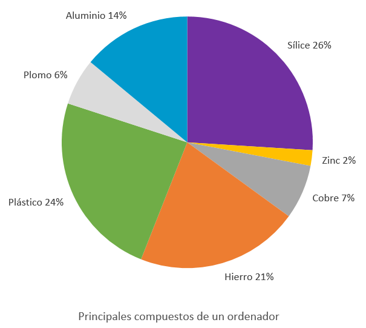
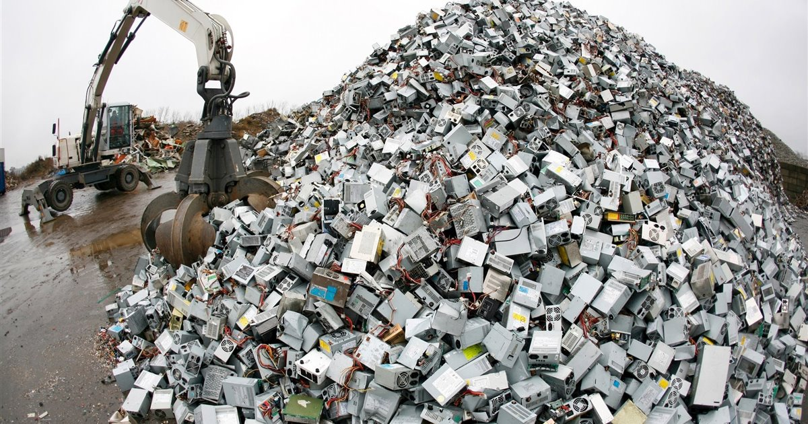

Desarrollo sostenible en la fabricación y el reciclaje de dispositivos informáticos
Los beneficios de las nuevas tecnologías son innumerables. Sin embargo, dada la gran cantidad de dispositivos que se compran y se desechan, es importante asegurar un desarrollo sostenible, tanto en la fabricación como en el reciclaje.
Fabricación de componentes informáticos
La fabricación de dispositivos informáticos requiere un alto consumo de materiales y energía, mayor al de otros productos tecnológicos tradicionales. Por ejemplo, para fabricar un ordenador de escritorio se precisan, al menos, 240 Kg de combustibles fósiles, 22 Kg de productos químicos diversos y 1500 l de agua. En consecuencia, el peso de los combustibles fósiles utilizados en su fabricación es unas diez veces el del ordenador, mientras que en otros productos, dicha proporción es muy inferior (solo dos veces en el caso de un automóvil o un frigorífico).

La obsolescencia programada
Consiste en el diseño de aparatos con la planificación de que tengan una duración determinada, de modo que, tras un periodo de tiempo determinado, dejan de utilizarse o se vuelven inservibles. Por ejemplo, los equipos de alta tecnología, debido a su rápida evolución, se consideran obsoletos al cabo de pocos años y se desechan cuando los fabricantes dejan de ofrecer actualizaciones o lanzan un producto similar con mejores prestaciones.
Para entender bien qué es esto de la obsolescencia programada, sus orígenes y algunos ejemplos de casos reales, te dejo el siguiente vídeo de "Tecnonauta", el canal de Tecnología en español más visto de Youtube:
El problema de la basura electrónica. Reciclaje de equipos informáticos.
Los equipos informáticos se componen de una serie de materiales potencialmente reciclables, pero también contienen otros elementos contaminantes para el medioambiente y peligrosos para la salud, como el cadmio, el plomo, el berilio, el cromo hexavalente, el arsénico, el selenio, el antimonio y el mercurio.
Por esta razón, es fundamental manipular correctamente la basura electrónica que generan estos dispositivos, para lo que se requiere un tratamiento específico que evite su impacto negativo en el entorno.

Los residuos de aparato eléctricos y electrónicos (RAEE) deben reciclarse por ley en nuestro país, a través de los puntos limpios y empresas especializadas. Dentro de los materiales que pueden ser reciclados se encuentran los plásticos y el hierro. Por otra parte, estos aparatos también contienen elementos de valor, como el cobre, el oro y la plata, que pueden reciclarse y volver a utilizarse como materias primas. Este tipo de minería urbana (extraer metales y minerales de los vertederos, no de la naturaleza), además de tener un impacto positivo sobre el medioambiente y la economía, implica menores costes, un ahorro energético y la reutilización de los recursos naturales del planeta.